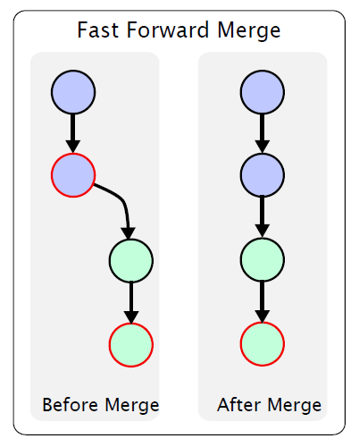
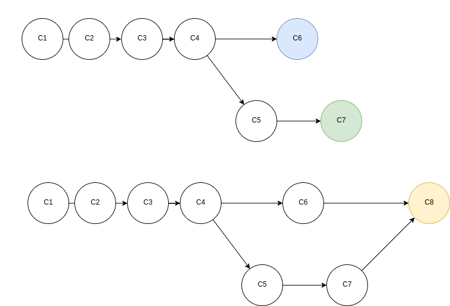
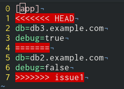

Ing. Yonatan Romero
Universidad Nacional de La Matanza| Red | Ninguna |
|---|---|
| Operaciones | Un archivo a la vez |
| Concurrencia | Bloqueo |
| Ejemplo | SCCS(1972), RCS(1982) |
| Red | Centralizada |
|---|---|
| Operaciones | Múltiples archivos |
| Concurrencia | Merge antes de commit |
| Ejemplo | CVS(1990), SVN(2000), TFS(2005) |
| Red | Distribuída |
|---|---|
| Operaciones | Conjunto de cambios |
| Concurrencia | Commit antes del merge |
| Ejemplo | Git(2005), Mercurial(2005), Bazaar(2005) |
Creado por Linus Torvalds para el desarrollo del kernel Linux
Información del usuario
git config --global user.name "Juan Peréz"
git config --global user.email "jperez@example.com"
Inicializa un repositorio
git init .
Ver estado del repositorio
git status
Agregar archivo al listado de archivos para hacer commit
git add lista.txt
Confirmar cambios
git commit
Ver estado del repositorio
git status
Ver historial de commits
git log
Etiquetar versiones
git tag 0.1.0
Quitar archivo del sistema de control de cambios
git rm build/a.out
Generalmente archivos autogenerados
.gitignore - Lista de arhivos que serán ignorados
por git
build/*
*.exe
*.class
*.pyc
Crea una rama nueva
git branch dev
Saltar entre ramas
git checkout dev
Repositorio común compartido entre miembros del equipo
git init --bare webapp.git
Crea un respositorio local clonando el repositorio remoto
| Ventajas | Desventajas |
|---|---|
| Fácil de compartir con otros miembros | Necesita configurar una red compartida |
| Rápido acceso al repositorio |
git clone /home/yromero/projects/webapp.git
| Ventajas | Desventajas |
|---|---|
| Fácil de compartir usando un servidor remoto | No existe el acceso anónimo |
| SSH comprime datos durante la transmisión. Mejora la velocidad |
git clone git@github.com:romeroyonatan/webapp.git
| Ventajas | Desventajas |
|---|---|
| Más rápido que otros | No hay seguridad (cualquiera puede hacer cambios) |
git clone git://username@server/webproject.git
| Ventajas | Desventajas |
|---|---|
| Fácil de configurar | Transmisión de datos lenta |
git clone https://github.com/romeroyonatan/webapp.git
Agrega un repositorio remoto a uno existente
git remote add origin https://github.com/romeroyonatan/webapp.git
Trae cambios realizados en repositorio remoto. No modifica archivos locales
git fetch
Combinación entre ramas
git merge origin/master
Subir commits locales al servidor remoto
git commit origin master
No existe conflicto. Mueve puntero HEAD
Se genera un commit nuevo que combine todos los cambios
Existen cambios en la misma sección de un elemento de configuración
Buscar algo entre todos los archivos
user@server:~$ git grep -n body
Master:Website.Index.html:4: <body>
Master:Website.Index.html:12: </body>
Ver archivos en conflicto
git status
Ver cambios en el repositorio
git diff <commit-id>
Guardar temporalmente los cambios no commiteados
git stashgit stash popAbre archivos conflictivos en editor de 3 vías
git mergetool
Elimina archivos untracked
git clean
Revertir cambios al archivo
git checkout config.ini
rm config.ini
git checkout HEAD config.ini
Volver a un estado anterior
git reset Bgit reset --hard Bgit reset --soft Bgit commit --ammendCrea un commit que revierte los cambios de un commit previo
No es buena práctica borrar commits. Es mejor revertirlos
git revert 0335a5f13En caso de haber subido accidentalmente un archivo con información confidencial
git filter-branch --index-filter 'git rm --cached
--ignore-unmatch myconfidentialfilename.txt' HEAD
Busqueda binaria para buscar commit que haya agregado un bug
user@server:~$ git bisect start
user@server:~$ git bisect bad commitIDAfterThePull
user@server:~$ git bisect good commitIDBefore